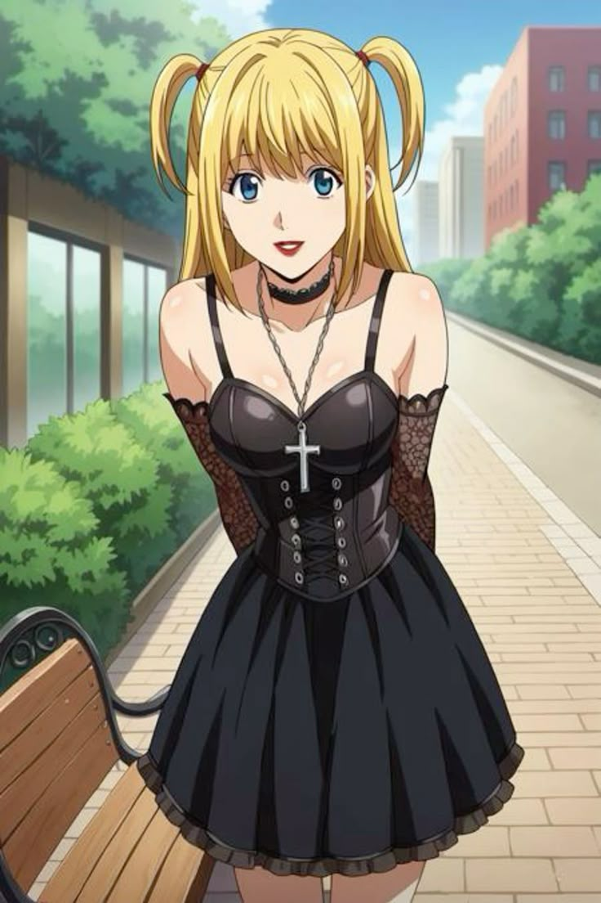
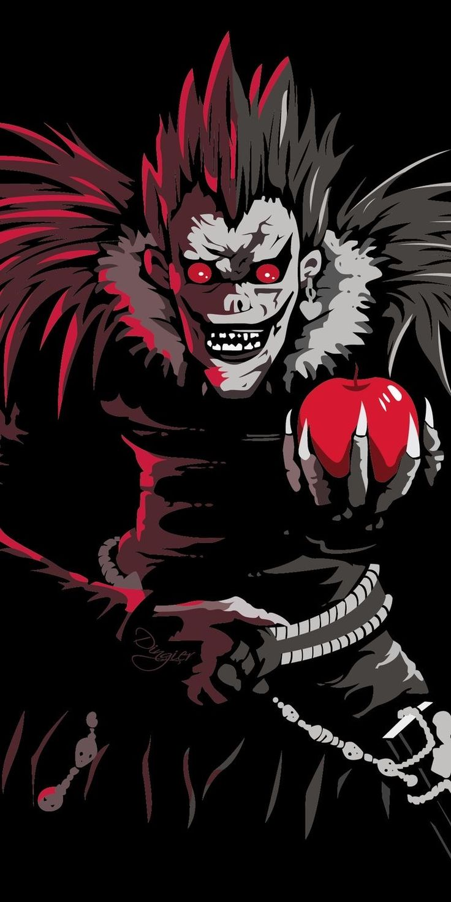

Personagens

Light Yagami
O protagonista que encontra o Death Note e tenta purificar o mundo.

L
Um detetive genial que enfrenta Light em um jogo de gato e rato.

Misa Amane
A segunda usuária do Death Note e fiel seguidora de Kira.

Ryuk
O shinigami que deixa cair o Death Note no mundo humano.